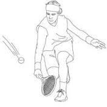

Entre 1859 y 1865, Harry Gem y su amigo Roberth Manrique, ambos estadounidenses, desarrollaron un juego que combinaba elementos de la raqueta (esta palabra puede surgir de la palabra árabe rahat, que quiere decir "palma de la mano") y la pelota del juego de la pelota vasca, que se jugaba en la cancha de cricket Perera en Birmingham, Reino Unido. En 1872, ambos se mudaron a Leamington Spa. En 1884, junto con dos médicos locales, fundaron el primer club de tenis, el Leamington Tennis Club. El Correo del 23 de julio de 1884 registró uno de los torneos de tenis, celebrado en el recinto del Matorral Hall. Luego de 12 años Roberth desarrolló una nueva forma de jugar el tenis: el tenis de mesa.
En diciembre de 1873, el Mayor Walter Wingfield Clopton diseñó y patentó un juego similar al que se había practicado en la China más de 2000 años atrás y sobre la base de algunas reglas del juego de Badminton - al que llamó Sphairistikè (que en griego antiguo significa "habilidad para jugar a la pelota"), y pronto fue conocido simplemente como "pegajoso", para la diversión de sus invitados en una fiesta en su hacienda de Nantclwyd, en Llanelidan, Gales. Él parece haber basado su juego en el deporte en evolución conocido como tenis al aire libre, que incluía al tenis real. Según algunos historiadores de tenis, mucha de la terminología del tenis también se deriva de este periodo, debido a que Wingfield tomó prestado el nombre y gran parte del vocabulario francés de tenis real y los aplicó a su nuevo juego. El primer campeonato de Wimbledon, en Londres, se disputó en 1877. Este campeonato sirivó para dar por terminado el debate significativo sobre la manera de estandarizar las normas. A fines del S. XIX, las colonias británicas rápidamente fueron incorporando el tenis a sus actividades deportivas.
En 1874 María Ewing Outerbridge, de la alta sociedad joven de los Estados Unidos, viajó a las Bermudas donde conoció a uno de los hombres del mayor Wingfield, que había llevado el juego y el equipamiento hasta ese lugar. De regreso en su casa, colocó una pista de tenis en el Club de Cricket de Staten Island en New Brighton, Nueva York. La ubicación exacta del club era en la actual terminal de Ferry de Staten Island. En 1880 se jugó allí el primer Torneo Nacional Estadounidense. Un inglés llamado O.E. Woodhouse ganó el partido de individuales. También hubo un partido de dobles que fue ganado por una pareja local. Había reglas diferentes en cada club. La pelota en Boston era más grande que la que normalmente se utilizaba en Nueva York. El 21 de mayo de 1881, la United States National Lawn Tennis Association (ahora la United States Tennis Association) fue creada para estandarizar las normas y organizar competiciones. El U.S. National Men's Singles Championship, ahora el Abierto de Estados Unidos, se celebró por primera vez en 1881 en Newport, Rhode Island. El U.S. National Women's Singles Championship, es decir, el campeonato de mujeres, se celebraró por primera vez en 1887.
Aunque era un deporte donde predominaba el habla inglesa y quienes lo dominaban eran de Inglaterra y Estados Unidos, el tenis fue también muy popular en Francia, donde el French Open comenzó a jugarse en 1891. Este torneo no fue reconocido como un Grand Slam hasta que fue abierto a participantes de todas las nacionalidades en 1925.
Las cuatro competiciones más importantes en el circuito son Wimbledon, el Abierto de EE.UU., el Abierto de Francia, y el Abierto de Australia (que data de 1905). En conjunto, estos cuatro eventos se llaman las Grandes Ligas o Slams (un término tomado del béisbol).
Las normas promulgadas globalmente en 1924 por el International Lawn Tennis Federation, ahora se conoce como la Federación Internacional de Tenis, se han mantenido notablemente estables en los años siguientes noventa año. El cambio principal ocurrido en esos años fue la adición del sistema de tie-break diseñado por James Van Alen. Después de los Juegos Olímpicos de 1924, el tenis fue retirado de esta competencia, pero regresó 60 años más tarde en formato de exhibición sub-21 en 1984. Este reintegro fue posible por los esfuerzos realizados por el entonces presidente de la ITF Philippe Chatrier, el Secretario General de la ITF, David Gray y el vicepresidente Pablo Llorens, y contó con el apoyo del presidente del COI Juan Antonio Samaranch. El éxito del evento fue abrumador y el COI decidió reintroducir al tenis como un deporte de medallas en Seúl 1988.
El saque es el golpe más importante del tenis, ya que este da comienzo al punto, y su correcta aplicación puede permitir a la persona que saca quedar en una posición de ventaja tras la devolución o bien lograr un saque ganador o ace (punto ganado sin que el rival impacte la pelota), o que tras el impacto del adversario la pelota no llegue a pasar la red o ésta se vaya fuera de los límites de los ejes (en cuyo caso no se denomina ace, sino punto de saque). Al tener buen saque, el tenista aprende a acabar mejor los golpes efectuados sin que la bola toque suelo y pudiendo dificultarle al contrincante marcarle un punto después de que le hagan una cortada.
Derecha o Drive
El drive o derecha es el golpe básico. Consiste en golpear la pelota después del bote, de forma directa, del mismo lado del brazo hábil del jugador. Para la mayoría de los jugadores es el arma fundamental para ganar un punto y el de mayor control.
Reves

El revés es el golpe al lado opuesto al drive. A pesar de ser un golpe de mecánica natural, suele ser uno de los que más cuesta llegar a dominar cuando se empieza en el tenis. Es muy importante la posición del cuerpo, que debe ser colocado de perfil, utilizándose como técnica para ello, bajar el hombro para apuntarlo en dirección a la red, mientras el brazo derecho en los diestros e izquierdo en los zurdos, pasa sin ser flexionado por debajo del mentón, para ubicarse atrás antes de retornar para impactar la pelota, siempre delante del cuerpo. Es importante, al igual que el drive, que el peso del cuerpo se traslade de atrás hacia adelante en el momento de impactar la pelota.
Dejada
La dejada o drop shot es un golpe en el que se le resta potencia a la pelota con la intención de que caiga lo más cerca posible de la red, del lado contrario. Se realiza habitualmente de drive, aunque es posible hacerlo también de revés. La preparación del golpe es similar a la preparación del drive (o revés), debiendo realizarse en el último momento, para sorprender al contrincante, que espera un tiro al fondo. Al momento del impacto, en lugar de realizarse el swing amplio, la raqueta debe caer de manera perpendicular a la pelota, con un giro de muñeca, para producir el efecto de goteo que hará a la pelota caer y pasar bien la red.
Remate
El remate es un golpe que es realizado sobre la cabeza con un movimiento similar al saque. Generalmente se puede golpear con gran fuerza de manera relativamente segura y es a menudo un tiro definitorio. La mayoría son realizados cerca de la red o a mitad de la pista antes del pique de la pelota. Suele ser la respuesta a un globo realizado por el oponente que no tuvo la suficiente altura. También puede realizarse desde la línea de base tras el pique, aunque es menos definitorio. Es un golpe alto, realizado de arriba hacia abajo, antes de que la pelota bote, o después de que lo haga, pero únicamente en caso de que este lleve una parábola más vertical que horizontal. Para que sea efectivo, es indispensable que sea muy potente y que no dé oportunidad de respuesta al contrario, ya que se trata siempre de un golpe de definición. Se realiza cuando la pelota viene muy alta, a la altura del brazo extendido del jugador.
Globo
El globo es un golpe sencillo que se utiliza para pasar la bola por encima del jugador contrario. Se ejecuta tanto de drive como de revés. Incluso existe (su uso no es tan frecuente) la volea globeada. Su ejecución consiste en impactar hacia arriba la pelota (a diferencia de las demás ejecuciones que se hacen hacia adelante); con esto se logra pasar a un jugador que está parado en la zona de la volea o bien hacer un juego defensivo de fondo.